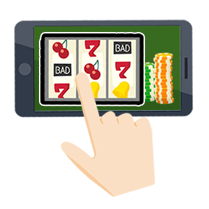

オンラインカジノとは？
初心者が安心して始めるための基礎講座

オンラインカジノとは？
初心者が安心して始めるための基礎講座
実際にお金を賭けてカジノゲームをネット上で遊ぶことができる「オンラインカジノ」。 日本でのカジノ解禁が話題となり、国内でもさらに人気が高まっています。
一方で興味はあるけれど、違法性や安全性が気になってなかなか手を出せないという方もいるのではないでしょうか？
当サイト（オンラインカジノ初心者ナビ）では、オンラインカジノの基本的な遊び方はもちろん、安全で信頼できるカジノの選び方などを徹底解説しています。
このようなオンラインカジノ初心者の方は是非ご覧になってください。
 著者：MASARU
著者：MASARUこのページでは、オンラインカジノに関する基本的な情報を全て掲載しています！
登録前に不安に思う方が多い違法や税金について、実際プレイする時に何のゲームをしたらいいのか？オンラインカジノは稼げるのか？など皆さんが迷ってしまいそうな項目をピックアップしてみました。
お試しで遊べる「無料プレイ」も用意してあるので、オンラインカジノのスロットの雰囲気を掴むこともできると思いますよ！
パソコンやスマホがあればいつでもどこでもプレイできるオンラインカジノですが、パチンコや競馬といったほかのギャンブルより還元率が高く、勝ちやすいというメリットもあります。
また、カジノが認められている国のライセンスを取得しているサイトであれば国の厳しい審査の下で運営されているため、不正やイカサマなどの可能性は限りなく低いという面もあります。
このように、オンラインカジノは稼ぎやすく危険性も少ないギャンブルですが、プレイする前には以下の3つのことに注意しましょう。
オンラインカジノは場所や時間を気にすることなく遊べるため、つい熱中してお金を使い過ぎてしまうというリスクもあります。
特にクレジットカードの場合、手元に現金がなくても賭け金を入金することができるため、お金が減っている感覚も薄くなりがちです。
使い過ぎを防ぐためには、1回あたりに使って良い金額や「〇〇円まで使ったら止める」などのルールを決めてプレイしましょう。
また、いくらオンラインカジノの還元率が高いといっても、ギャンブルであることに変わりはありません。
タイミングによって大きく勝つこともあれば連敗することもあるので、安定した収入を得るには不向きです。
また、負け額を取り返すために生活費を削ったり、お金を借りるまでのめり込んでしまうと「オンラインカジノ依存症」に陥ってしまう可能性もあります。
そうならないためにも、オンラインカジノの勝利金で生活費を賄ったり副業にしようとせず、あくまで無理のない範囲で賭けてゲームを楽しむものと心掛けてプレイしてください。
オンラインカジノ初心者ナビでは、「ボーナスが豊富」「人気がある」など5つの基準からベラジョンカジノやミスティーノなどおすすめの優良カジノサイトを紹介しています。カジノサイトをまだ選んでいない方は要チェックです！

オンラインカジノとは、インターネット上でカジノゲームをプレイできるサイトです。
実際のランドカジノのようにお金を賭けて遊ぶことができ、「ネットカジノ」とも呼ばれています。
ブラックジャックやバカラ、ポーカー、ルーレットといった定番のカジノゲームがプレイできるほか、オンライン上で中継を繋いでディーラーと対戦できるライブカジノなどもあり、海外旅行に行かずとも本場ランドカジノの臨場感を楽しめることから、現在、全世界で4,000万人以上の方が利用しています。
オンラインカジノの歴史は20年以上にわたり、1996年に世界初のオンラインカジノ「インターカジノ」が誕生してから、さまざまなサイトやゲームがリリースされてきました。
おもに海外を拠点として運営されていますが、最近では日本語に対応しているオンラインカジノも増えています。
オンラインカジノでは日本人に馴染みのあるパチスロ風のスロットゲームも多く配信されていることや、新型コロナウイルス感染拡大による外出自粛の影響などもあって、ここ数年で日本での人気も伸びており、今では国内でも約300万人近くの方がプレイしているといわれています。
また、実際のカジノとは違い、キャンペーンでゲームに使用できるボーナスマネーが獲得できたり、ゲーム結果を競うトーナメントが開催されるなど、お得に遊べるサービスや飽きずに楽しめるイベントもあるのがオンラインカジノならではの魅力です。
パソコンやスマホがあればいつでもどこでもプレイできるオンラインカジノですが、パチンコや競馬といったほかのギャンブルより還元率が高く、勝ちやすいというメリットもあります。
また、カジノが認められている国のライセンスを取得しているサイトであれば国の厳しい審査の下で運営されているため、不正やイカサマなどの可能性は限りなく低いという面もあります。
このように、オンラインカジノは稼ぎやすく危険性も少ないギャンブルですが、プレイする前には以下の3つのことに注意しましょう。
オンラインカジノは場所や時間を気にすることなく遊べるため、つい熱中してお金を使い過ぎてしまうというリスクもあります。
特にクレジットカードの場合、手元に現金がなくても賭け金を入金することができるため、お金が減っている感覚も薄くなりがちです。
使い過ぎを防ぐためには、1回あたりに使って良い金額や「〇〇円まで使ったら止める」などのルールを決めてプレイしましょう。
また、いくらオンラインカジノの還元率が高いといっても、ギャンブルであることに変わりはありません。
タイミングによって大きく勝つこともあれば連敗することもあるので、安定した収入を得るには不向きです。
また、負け額を取り返すために生活費を削ったり、お金を借りるまでのめり込んでしまうと「オンラインカジノ依存症」に陥ってしまう可能性もあります。
そうならないためにも、オンラインカジノの勝利金で生活費を賄ったり副業にしようとせず、あくまで無理のない範囲で賭けてゲームを楽しむものと心掛けてプレイしてください。
オンラインカジノは現時点においては、ルールを守れば安全に楽しむことができるギャンブルです。
ですが、中にはライセンスを取得していないオンラインカジノや、詐欺サイトなどが存在しているのも事実です。
つまり、プレイヤーひとりひとりが「オンラインカジノの安全性や信頼度」を見極める必要があるということ。 ここからは、信頼できる優良オンラインカジノを見極めるためのポイントをご紹介しましょう。
この項目は、優良オンラインカジノを見極め、安全に楽しむための大前提とも言えるチェック内容です。
登録をする前に必ず確認をしましょう。
これらのポイントをチェックすることは、オンラインカジノを楽しむ上でとても重要です。
この条件がクリアできたオンラインカジノの中から、ボーナスの仕組みやゲーム数の多さなど、自分に合ったオンラインカジノを選ぶと良いでしょう。
信頼性の高さで当サイトがおすすめするのは、5つの条件を見事クリアしたベラジョンカジノ！
合法的に運営しており、プレイヤーがたくさん集まるオンラインカジノの場合、それなりに大きなお金が集まり、回していく必要があります。
つまり、安定した運営資金を確保できる企業力も大事になってくるということです。
オンラインカジノに登録する場合は、どんな企業がオンラインカジノを運営しているのかも、しっかりチェックしておきましょう。
悪質なサイトの特徴については「オンラインカジノの詐欺の手口を解説！危ないカジノを見分けるには？」で詳しく紹介しています。
「オンラインカジノは違法なのか？」ということに関しては、オンラインカジノをプレイする・しないに関わらず、誰しもが気になるところですよね。
皆様もご存知のことだと思いますが、競馬・競輪・宝くじなど国が認めたギャンブル以外は全て違法です。
その為、「オンラインカジノ＝違法」と考える方も多いようです。
オンラインカジノ自体は、海外で国が発行する運営許可証（ライセンス）を取得しているため、合法的に運営されています。
しかし、オンラインカジノの運営者とプレイヤーを罪に定める直接的な法律がないことや、今までの判例などもあり、「違法か合法かは明確にいえない」という状態が続いています。
当サイトとしましても、オンラインカジノは「違法とも合法ともいえない」というスタンスで情報を発信しております。
詳しくは「オンラインカジノは違法なのか？逮捕事例から違法性をチェック」で解説していますので、ぜひご覧になってください。
2022年現在、岸田総理が国会で「オンラインカジノを取り締まる」と発言したり、警察庁が「オンラインカジノは違法」という注意喚起を出すなど、オンラインカジノの規制に向けた動きが出ています。
しかし、現在の賭博法をオンラインカジノに適用できるかや、今後新たな法律が整備されるかは現時点でははっきりしていません。
ただし下で説明するインカジなど、プレイが明確に違法になる場合もあるので注意してください。
オンラインカジノと混同されやすいものとして、インカジ（インターネットカジノ）があります。
結論から言うと、インカジは明確に違法とされています。
インカジとは、店舗内にあるインターネットを通し、カジノゲームのプレイを提供している場所のこと。
実店舗が日本国内にあり、店舗内で換金まで行っています。
オンラインカジノの運営元が海外にあるのに対し、インカジは明確に日本国内で運営されています。
当然ながら、国内で運営許可を得るためのライセンスも取得していません。もしインカジの利用が見つかった場合、運営者・プレイヤー共に賭博罪の容疑で逮捕されます。
実際にインカジが検挙された事例も多数あるため、絶対に利用しないようにしましょう。
オンラインカジノを始めるにあたって気になるのは、実際に「勝てるのか、勝てないのか」という部分ですよね。
実際の勝率は運によるものも大きいですが、他のギャンブルに比べて勝ちやすいかどうかは重要なポイントです。
そこで重要な基準の1つが還元率（ペイアウト率）です。
宝くじや競馬、パチンコなど他のギャンブルの還元率が40～80％程度であるのに対し、オンラインカジノの還元率は約97％。
圧倒的に高い数字が出ているオンラインカジノは勝ちやすいギャンブルであると言えます。
還元率の仕組みや、オンラインカジノの還元率が高い理由については下記のリンク先で紹介しています。
プレイヤーが積み上げた賭け金が一気に賞金として払い出される「ジャックポットスロット」など、高額賞金獲得者も多く出ているオンラインカジノ。
夢も膨らみますが、オンラインカジノで稼いだらそのお金に税金はかかるのでしょうか。
結論から言うと、課税対象になります。
日本の税法では、懸賞や公営ギャンブルの賞金などは「一時所得」というカテゴリで課税対象となり、オンラインカジノの勝利金も「賞金」という扱いで「一時所得」に該当します。
課税対象となる金額は基本的には年間50万円以上、会社員など給与収入がある方は年間90万円以上となります。
一時所得は自分で納税をする必要があるため、オンラインカジノをプレイする際は税額の計算方法や確定申告などについても理解しておきましょう。
税金については「オンラインカジノで税金が発生するのはいくらから？確定申告のやり方もチェック」で詳しく解説しています。

オンラインカジノでは、以下の方法で賭け金の入金や勝利金の出金を行うことができます。
クレジットカードはオンラインカジノに登録後、すぐに入金できる手軽さから特に人気の決済方法ですが、出金には利用できないというデメリットもあります。
そのため、入出金両方に使えてお金の管理がしやすい電子決済サービスを利用する方も増えています。
また、最近では国内の銀行口座を通じて入出金が可能な銀行振込に対応しているカジノも多くなりました。
しかし、マネーロンダリングなどの不正防止やギャンブル利用への規制により、オンラインカジノで使えなくなる入出金方法もあります。
各オンラインカジノで使用できる決済方法に関しては、常に最新の情報をチェックするようにしましょう。
詳しくは「オンラインカジノの入金・出金方法を解説！使いやすい決済手段は？」で解説しています。
また、オンラインカジノの中には本人確認(KYC)を行わないとスムーズに入出金が行えないサイトもあります。
本人確認(KYC)登録は、二重登録やマネーロンダリング（資金の不正使用）防止のため、登録者本人であることを証明する手続きになります。
本人確認のためには身分証明書の提出が求められ、手続きに3日ほどかかる場合もあるため早めに登録しておきましょう！

通常は様々なカジノサイトを通じたプレイヤーが1つのテーブルに参加します。
しかしカジノシークレットでは、専用のテーブルが用意されているため、人気のライブカジノを贅沢に楽しむことができちゃいます！
オンラインカジノが初めての場合、選び方や登録・出金のやり方がわからず、何から始めていいのか分からないという方もいるでしょう。
でも、そんなに気構えなくても大丈夫！1つずつ順序良くやれば何も難しくはありません。下記の順序を参考に準備を進めてくださいね！
STEP. 1 オンラインカジノを選ぶ
まずは自分に合ったオンラインカジノを選びます。
どこを選んだらいいか分からない方は、ランキングを活用しましょう。
当サイトでは日本人でも安心して遊べる信頼性の高いオンラインカジノを紹介しています。
STEP. 2 オンラインカジノに登録する
オンラインカジノを選んだら、早速アカウントを登録しましょう。
登録のやり方は非常にシンプル。
「メールアドレス」「住所」「名前」などを入力してログイン情報と、個人情報を登録しましょう。
STEP. 3 オンラインカジノに入金する
STEP. 4 カジノゲームをプレイする

入金したら、カジノゲームにチャレンジ！
テーブルゲーム、スロットなどから好きなゲームを選びましょう。
当サイトでもおすすめのスロットをランキングで紹介しています。
どのゲームで遊ぶか迷っている方はご覧ください！
STEP. 5 オンラインカジノから出金する
ゲームで勝って利益が出たら、いよいよ出金です。
入金方法にクレジットカードなどの入金専用の方法を使った方は、別の出金方法を用意する必要があります。
あらかじめ、出金方法について確認しておきましょう。
オンラインカジノの選び方が分かっても、カジノゲームに慣れないうちにリアルマネーを賭けるのは少し怖い気持ちもありますよね。
そんな時にとても役立つのが「無料プレイ」と「入金不要ボーナス」です。
「無料プレイ」も「入金不要ボーナス」も、プレイヤーにとっての意味合いはあまり変わりません。
どちらもオンラインカジノの世界を少し「お試し」で体験できるように準備されています。
多くのオンラインカジノでは、実際にリアルマネーを賭けたプレイを始める前に、お試しで無料プレイができるようになっています。
無料プレイだけならアカウント登録なしでプレイできる場合も多いため、 入金前はもちろん、まだオンラインカジノに登録していない方がお試しで遊ぶのにも便利です。
無料プレイでも、有料プレイと基本的なゲーム設定や還元率は変わらないため、より実践的にオンラインカジノのゲームを体験できるでしょう。
ゲームを通してオンラインカジノの世界に触れてみたい方は、無料プレイを試してみてください。
アカウント登録をすると、オンラインカジノによっては「入金不要ボーナス（登録ボーナス）」と呼ばれるボーナスチップが付与されます。
付与されたチップは賭け金として利用できるので、リアルマネーを賭けずにプレイが可能です。
また、無料プレイ非対応のゲームを試せるのも、入金不要ボーナスのメリット。
例えば本場カジノのディーラーとカメラを通して対戦できる「ライブカジノ」などは無料プレイに対応していませんが、入金不要ボーナスを使えばお試しで利用できます。
まだ入金するのが怖い方や、有料プレイ前にゲームの練習をしておきたい方は、ぜひ活用してみてください。
無料プレイは、他のスマホゲームと同じ感覚で気軽に遊べます！カジノゲームのルールを覚えるのにも最適ですよ！
オンラインカジノは、バカラ、ブラックジャック、ルーレット等カジノゲームの定番から、日本人に馴染み深いスロット、そして萌えキャラが用いられた変わり種まで、幅広いゲームが用意されています。
多いところでは約2,000種類と、ゲームの種類がとても豊富です。
「たくさんありすぎて迷ってしまう」という方に、ここではオンラインカジノで抑えておきたいおすすめのゲームを紹介します！
バカラは本場のカジノで遊べるゲームとして知名度が高く、世界最大のカジノがあるマカオでも最も人気のゲームです。
ルールはかなり単純で、駆け引きや技術も不要です！
「バンカー」と「プレイヤー」それぞれが手札を持ち、合計した数の「1の位が9に近い方が勝ち」。
勝敗の確率は50%！初めてカジノゲームをプレイする場合でも運任せで気軽に楽しむことができます。
オンラインカジノで遊べるバカラ4選！ルールや賭け方も徹底解説
ブラックジャックは、スタンダードでシンプルなカードゲームです。
ルールは、手持ちカードの合計が「21を超えない範囲で、21に近い方が勝ち」。
勝ちパターンに法則性があるので、戦略次第で勝利を狙うことができます！
「海外のゲームは日本人でも楽しめるの？」と思われがちですが、日本のパチスロに似たスロットが次々と開発されています。
また、萌えキャラなどのアニメが取り入れられ、国内プレイヤーにも人気が高く支持されているのです。
3人の美少女戦士が活躍するパズルゲーム風の落ちゲースタイルのスロット。最大20倍のマルチプライヤーと美少女たちのガールパワーで高額賞金獲得を狙いましょう！ フリースピンでは3人の美少女から1人を選んでフリースピンにチャレンジできるのもムーンプリンセスの特徴です。
シンプルさとパチスロ風の派手なデザインで日本人に大人気。だんだん昇格する高配当モードへの期待感がたまらない！
一発の賞金が億越えになる可能性がある「ジャックポットスロット」。入金額に関係なく過去には23億と高額当選の記録も！

リリース以来大ヒット中のバトル式スロット。モンスターに勝てば幻の高配当モードに突入し大勝利が狙える！
使用されているのはなんと日本語！赤ずきんちゃんモチーフの萌えキャラが狼と戦うバトル演出で変身シーンも可愛い！
＼他にも日本人向け人気スロットが続々登場！／
オンラインカジノの人気スロットランキングはこちら
オンラインカジノで最も人気を集めているのは、ディーラーと対面してゲームをプレイできる「ライブカジノ」。約70％ものユーザーがプレイしています。
リアルタイムでゲームが進行するためイカサマの心配もなく、本場さながらのスリルや臨場感を味わうことができます。

そして対戦できるディーラーは、なんと美女ばかり！
ヨーロッパ系、アジア系と美女が顔を揃え、ゲームを一層華やかにしてくれます。
ゲームごとに複数のテーブルが存在するので、「ディーラーが綺麗だから」という選び方ももちろんOK。
プレイヤー側が顔を出す必要も、英語を完全に理解する必要もありませんので、身構えずマイペースに楽しむことができますよ。
通常は様々なカジノサイトを通じたプレイヤーが1つのテーブルに参加します。
しかしカジノシークレットでは、専用のテーブルが用意されているため、人気のライブカジノを贅沢に楽しむことができちゃいます！
オンラインカジノでより稼ぐためには、資金管理や攻略法(必勝法・ベッティングシステム)を活用するのがコツです。
資金管理とは、その名のとおり収支のバランスを取りながらプレイすること。
ギャンブルで儲けるには、1回分の勝ち負けではなく「トータルしたときに利益が出ているか」が重要になります。
そのためには前述のとおり、設定した予算や勝ち逃げ・損切りなどのルールを徹底して守り、長期的に見て損失が出ないようなプレイをしましょう。
また、テーブルゲームでは攻略法と呼ばれる賭け方をすることで稼ぐチャンスを増やすことができます。
たとえば「マーチンゲール法」は、負けたらベット額を倍にしていき勝ったら最初の金額に戻すという方法で、一度勝てば損失分を取り戻すことができます。
連勝すれば利益をコツコツ積み上げることもできるので、高額勝利より損失額を最小限に抑えたい方向けの攻略法です。
反対に、勝つごとにベット額を倍に増やしていく「パーレー法」は、ある程度連勝した時点でゲームを終了すれば勝利金を確保できるため、短時間で利益を出したいときなどに有効です。
どちらの方法も負けたときのリスクはありますが、両方を組み合わせて使うことで、それぞれのデメリットをカバーしてより勝率を上げることも可能です。
ここで紹介した「マーチンゲール法」「パーレー法」は初心者の方にもわかりやすい比較的シンプルな攻略法なので、ぜひ実践しながら使い方を研究してみてはいかがでしょうか。
その他の攻略法やお役立ち情報については「【オンラインカジノ実践ブログ】初心者にありがちな悩みの解決方法を伝授！」のブログで詳しく紹介しています。
世界中に数千以上のオンラインカジノが存在するといわれている中、すべてが優良なサイトではないことは事実です。
そのため、
「どのオンラインカジノを選べばいいのかわからない」
「結局どこが安心できるオンラインカジノなの？」
と思ってしまうこともあると思います。
そこで、オンラインカジノ選びの基準として重要になるのが「評判・口コミ」です。
現在は日本でもオンラインカジノの利用者が増えているため、SNSやインターネットの掲示板などにも実際のプレイヤーからの口コミが多く投稿されています。
気になるオンラインカジノを見つけたら、ぜひ一度評判を検索してみましょう。
もちろん、どのオンラインカジノも良い口コミばかりではありませんが、その場合は「ゲーム数が多い」「サポート対応時間が長い」「使える入出金方法が多い」など、自分が何を重視するかでカジノを選ぶのがおすすめです。
私たちは、これからオンラインカジノを始めたいという方のために、安心して遊べるオンラインカジノを日々調査し、各カジノの解説ページではプレイヤーから寄せられた評判・口コミも掲載しています。
自分に合ったオンラインカジノが見付からないという方は、ぜひ参考にしてくださいね！

 オンラインカジノ基礎講座 MENU
オンラインカジノ基礎講座 MENU
Online Casino kiso Curriculum


世界中で人気が高まっているオンラインカジノですが、サイト数が増えた分、中には悪質なカジノが紛れているのも事実です…。後ほどくわしく解説しますが、魅力的なポイントだけでなく、注意点や悪質カジノの見極め方などもしっかり把握しておくことが重要です！